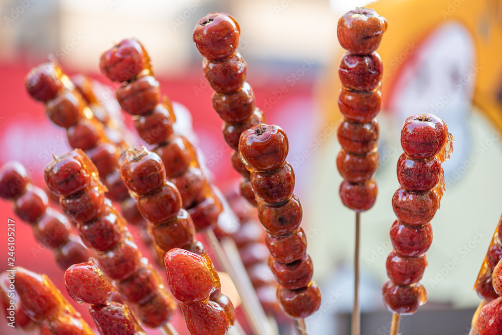

Bing Tang Hulu

Red hawthorn berries dipped in a sugar syrup and served on a bamboo skewer
The traditional Bing Tanghulu are made with the Chinese hawthorn, or 山楂, which are rather like crab apples, tart, small and kinda sweet. But it can be made with other fruits as well. The fruits are on skewers and in a thin hard candy shell.
Tanghulu is also a super popular street food throughout Asia. This tanghulu recipe only requires 3 ingredients.
- Fruit: Tanghulu traditionally has hawthorn berries but you can use any fruit of your choice.
- Sugar: Sugar creates the hard candy coating and adds sweetness to the fruits.
- Water: Water helps turn the sugar into a clear, amber syrup instead of brown caramel.
Ingredients
- Fruit: Tanghulu traditionally has hawthorn berries but you can use any fruit of your choice.
- Sugar: Sugar creates the hard candy coating and adds sweetness to the fruits.
- Water: Water helps turn the sugar into a clear, amber syrup instead of brown caramel.
Steps
- Prepare The Fruit
Firstly, wash fruit and completely pat dry.
If the fruit is wet, the sugar coating will not stick.
Remove leaves, stems, peel, seeds, or any other inedible parts.
If using a larger fruit, cut into bite size pieces.
Then place fruit onto skewers. I recommend 3 pieces or less per skewer so it is easier to work with.
Once the fruit are on skewers, set it aside while you prepare the sugar coating.
- Make Sugar Candy Coating
To make the sugar coating add sugar and water in a 2:1 ratio in a small pot on low to medium heat.
Do not stir. Stirring introduces more air bubbles causing the sugar to crystalize.
Crystalized sugar will be cloudy and chunky instead of clear and smooth, which is what we want for this tanghulu recipe.
Bring the sugar mixture to a boil and simmer until it is thick like syrup and amber in color.
This takes about 10-20 minutes.
An amber color indicates that the sugar is hot enough to harden like candy which is about 300°F.
If you do not wait until it is hot enough to begin dipping, the sugar coating will not harden.
Instead, the coating will be more chewy and stick to your teeth when you bite into it instead of giving you that satisfying crunch.
- Test The Candy Coating
Once the sugar is amber in color or about 300°F, test the syrup to make sure it is hot enough before dipping the fruit skewers.
You can’t have tanghulu without a hard crunchy candy coating so it is important to test the syrup.
To do this, simply drizzle a spoonful of the syrup into an ice water bath.
If it hardens within seconds and cracks when you bend it, then it is ready for dipping.
If it dissolves in the water or is soft and bendy, then let the syrup simmer longer on the stove and test again.
- Coat Skewers
When the syrup is ready, quickly dip the fruit skewers into it. Tilt your pot and swirl as needed to ensure that all sides of the fruit are coated. Then remove from the syrup. Hold the skewer over the pot and quickly swirl to evenly coat a thin layer while letting the excess sugar drip down.
The quick swirl and drip is important because you don’t want the sugar coating to be too thick and end up breaking a tooth while trying to eat it.
Then immediately dip the skewer into an ice water bath to cool and harden the sugar coating.
- Enjoy!
Lastly place the sugar coated skewer on a plate or a cup so that it stands.
Then repeat with the remaining skewers.
It is important to work fast so the syrup doesn’t burn or crystalize.
If it does burn or crystalize, it cannot be fixed. You will have to create a new sugar mixture.
Tanghulu is best enjoyed immediately and not kept as leftovers.